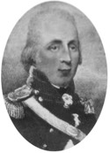
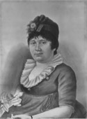

Beaubien-Perrault-Benington - Family Card
Beaubien-Perrault-Benington - Family Card
Ignace Philippe Aubert De Gaspé(5 Apr 1714 - 26 Jan 1787)Charles Francois Xavier Tarieu De Lanaudière(4 Nov 1710 - 1 Feb 1776)
M. Anne Coulon De Villiers(6 Sep 1722 - 17 Mar 1789)Catherine Lemoyne De Longueuil(25 Nov 1734 - 16 Apr 1788)
m. 28 Jan 1786, Québec, Québec

b. 14 Aug 1758, Québec, Québec
d. 13 Feb 1823, St-Jean-Port-Joli, Québec
br.
occ. seigneur
edu.
rel.
Flags. Beaubien

b. 17 Feb 1767, Québec, Québec
d. 13 Apr 1842, Québec, Québec
br. 18 Apr 1842, St-Jean-Port-Joli, Québec
occ.
edu.
rel.
Flags. Beaubien
Children
> Philippe Joseph Aubert De Gaspé(30 Oct 1786 - 29 Jan 1871)
Antoine Frédéric Aubert De Gaspé(10 Aug 1788 - 21 Aug 1788)
Charles Guillaume Aubert De Gaspé(10 Aug 1789 - 18 Aug 1789)
Antoine Thomas de Gaspé(21 Dec 1790 - 27 May 1824)